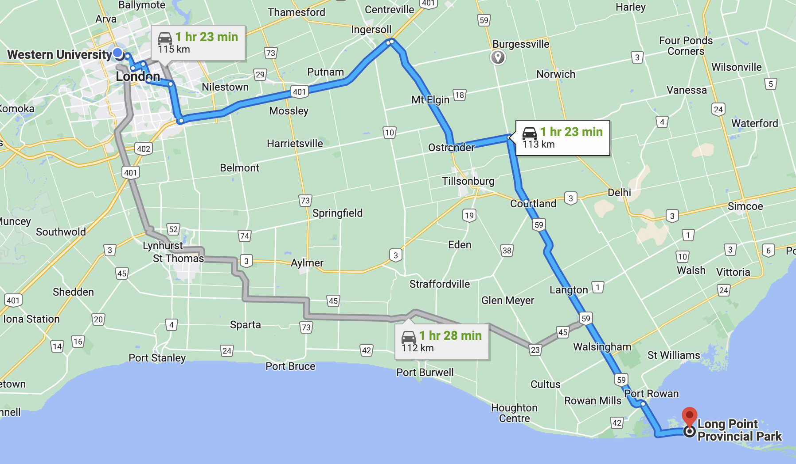
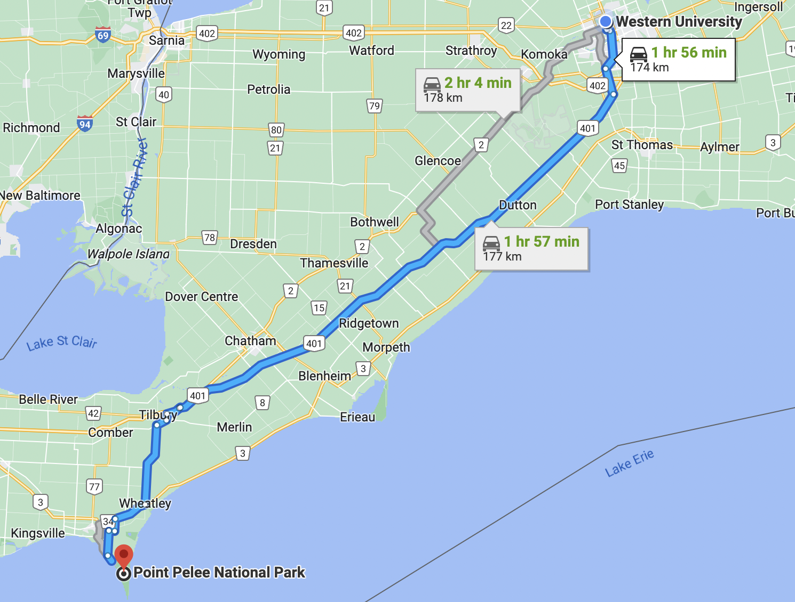
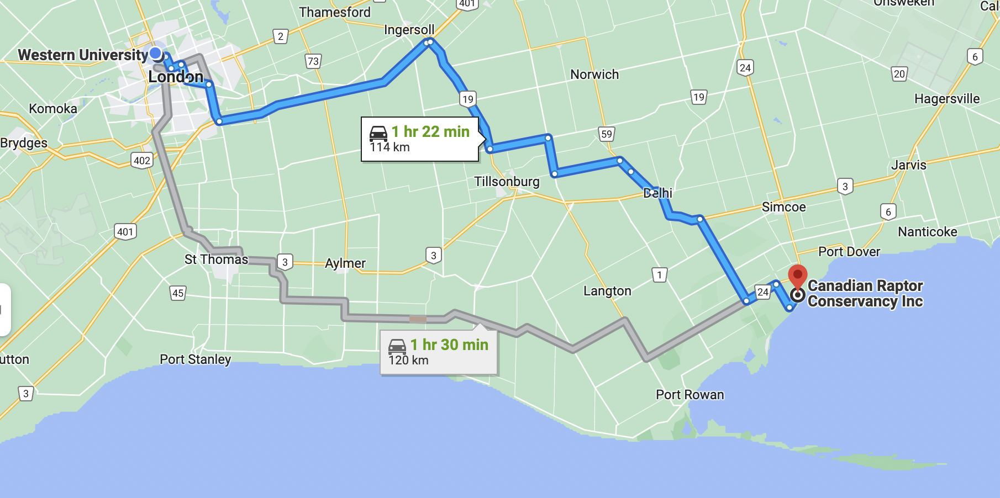

Hot Spots
Here are some places of interest for bird lovers within a 2 hour drive from Western University:
1. Long Point, Port Rowan, Ontario

Long Point Bird Observatory is the oldest bird observatory in North America. It advances the sound and ethical banding principles and techniques promoted by the North American Banding Council. Most mornings in the spring and in the fall, as long as it is not raining, anyone can come and watch the daily bird banding demonstrations. This is not only fascinating but it is also free to the public! During the banding you will get to see the birds up close and see how the birds are captured for the banding. In August they have workshops and internships for children interested in bird.
2. Point Pelee National Park, Leamington, Ontario

Point Pelee Park is one of the best locations to see bird migration. It is a small area of land that attracts a wide diversity of birds during each species’ annual migration. More than 350 different species of birds have been observed in the Point Pelee Birding Area. The park has more than 20KM of trails for bird watchers. Every year Point Pelee Park host the "Festival of Birds" in early May. During this time they host many events just for bird watchers such as twilight birding hikes and birding by boat and the basics of birding.
3. The Canadian Raptor Conservatory, Vittoria, Ontario

The Canadian Raptor Conservatory is an organization whose goal is to educate Canadians about birds of prey. They offer live shows and run events for all levels of school children. They are one of the largest captive breeding projects in the world. They also care for sick and injured birds and help return the birds to the wild if possible. They help control bird populations, where rather than killing birds, they use scare tactics to help birds learn to avoid certain areas such as airports. The Canadian Raptor Conservation even provides trained birds for TV shows and movies. For example, they supplied two Great Horned Owls for an Ashton Kutcher movie.